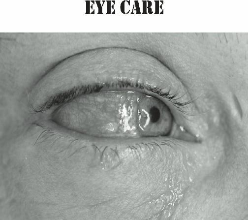
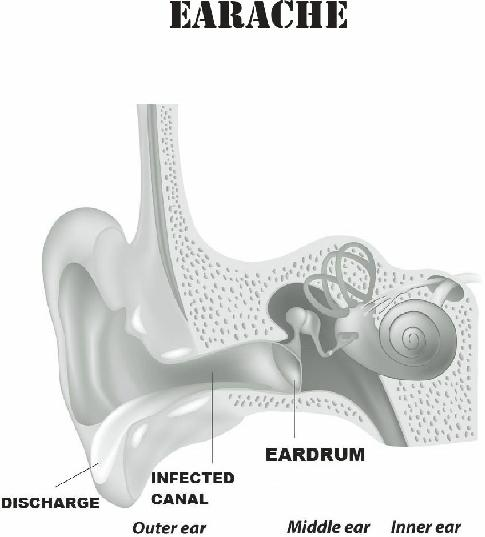
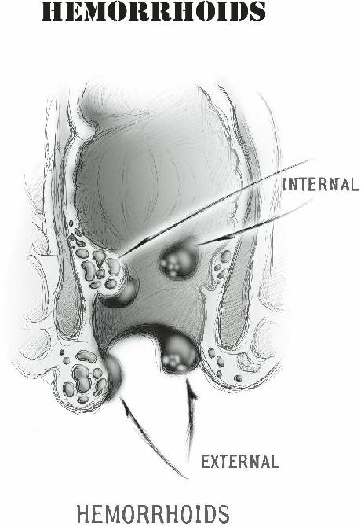

Forte) 500mg three times a day for a week is a reasonable first choice. If you are allergic to Penicillin family drugs, consider Trimethoprim-Sulfamethoxasole
(Bird-Sulfa)
160mg/800mg twice daily.
Nasal decongestants such as Pseudoephedrine (Sudafed) may give some relief; so may sterile saline nasal rinses.
Migraines
The other common cause of headache is the migraine.
The exact cause of migraines is uncertain. It is thought by some to be related to spasms in the blood vessels.
Migraines may be genetic in nature, as they seem to run in families. Women are more susceptible than men.
A specific pattern of symptoms is seen in this variety of headache:
Pain behind the eye (usually one-sided)
Sensitivity to light, noise or odors
Nausea and vomiting (causing loss of appetite or stomach discomfort)
Vision changes (blurring, light and color phenomena)
Bed rest in the dark will be helpful here, as well as
Ibuprofen and/or Acetaminophen. Some migraine medications use caffeine, and sometimes are effective.
Teas and Coffee might be alternatives in an austere setting. If you are a chronic migraine sufferer, ask your physician for Sumatriptan (Imitrex), a strong antimigraine medication, to stockpile.
Other headache causes
In women, hormonal changes may be responsible for headaches. Pregnancy, menopause, menstruation, and the use of birth control pills have all been implicated as risk factors. Cranberry juice and other natural diuretics may be helpful to limit swelling that may cause some headaches in these cases. Limiting pre-menstrual salt intake may also help.
Headache caused by dehydration will be rampant in a long-term survival situation. This variety will also present bilaterally and is commonly made worse by standing up rapidly from a lying position. These patients need fluids, which will gradually improve their symptoms.
Less common causes of headache would include an infection of the central nervous system called
“meningitis”. Along with headaches, meningitis presents with a stiff neck, fever, and possibly a rash. This condition may be caused by bacteria or viruses. Without modern medical facilities and labs, you could treat this condition with antibiotics and antivirals; expect variable results.
Uncontrolled high blood pressure or a burst blood vessel in the brain may cause a stroke (previously discussed elsewhere in this book). Besides the sudden onset of a severe headache, you will notice that your patient has lost strength in the arm and leg on one side;
you will also note decreased motion on one side of the face and absent or slurred speech. Loss of vision in one eye is sometimes seen.
This condition, in a collapse, will be treated only with bed rest. There is often some improvement over the first 48 hours or so. Beyond this point, further recovery may be limited. This is one of the main reasons why it is so important for you as medic to treat all cases of high blood pressure.
Natural Headache Relief
If you would like a strategy to deal with a headache without drugs, try the following:
Place an ice pack where the headache is.
Have someone massage the back of your neck.
Using two fingers, apply rotating pressure where the headache is.
Lie down in a dark, quiet room. Get some sleep if at all possible. If your blood pressure is elevated, lay on your left side (pressure is usually lowest in this position).
Track what you were doing or perhaps what you ate before the headache started; avoid that activity or food if possible.
A number of herbal remedies are available that might help headache. Feverfew is an herb that stops blood vessel constriction and is anti-inflammatory. This can be taken on a daily basis (1-2 leaves) for those with chronic problems (warning: Feverfew should not be ingested during pregnancy or nursing). Gingko Biloba has a similar action.
The pain of tension headaches can be relieved if you utilize herbs that have sedative and antispasmodic properties. Teas made from Valerian, skullcap, lemon balm, and passion flower have both. Herbal muscle relaxants may also help: rosemary, chamomile, and mint teas are popular options.
For external use, consider lavender or rosemary oil.
Massage each temple with 1-2 drops every few hours.

Conjunctivitis or “ Pink Eye”
By picking up this book, you have demonstrated that you have excellent foresight. Unfortunately, that doesn’t mean that you necessarily have excellent eyesight. Ask anyone on the street which of the five senses they would least be willing to sacrifice. They probably will tell you that their vision is the sense they would most want to preserve. Human beings aren’t perfect, and one of our most common imperfections is that of being nearsighted
(also known as “myopia”) or farsighted (also known as
“hyperopia”).
Most of us correct our eye issues with eyeglasses or contact lenses. In a collapse setting, these vision aids become more precious than gold, but most people haven’t made provision for multiple replacement pairs of contact lenses or spare eyeglasses.
Imagine what would happen in a collapse setting if your contact lenses dry out or one of your children steps on your glasses. I can’t think of anything scarier than being on your own and not be able to see. Having a few pairs of reading glasses in your storage will be helpful as well; everyone reaches an age when eyesight naturally changes. It’s important to know that neither contact lens nor eyeglasses will be manufactured in times of trouble.
Eye protection glasses are another required item.
Many of us with perfect vision will be negligent about wearing eye protection when they chop wood or other chores likely to be part of normal off-grid living. Without eye protection, the risk of injury when performing strenuous tasks will be much higher.
Early in this book, I mentioned that you should deal with your medical issues BEFORE a societal collapse occurs. Bad eyesight might be one of those issues. One option you may not have considered is having your eyesight corrected to 20/20 with LASIK surgery. Lasik surgery uses pinpoint lasers to change the shape of your retina so that you are less nearsighted or farsighted. It has been routinely available for years now, and is one of the safest surgical procedures in existence.
The LASIK procedure for both eyes takes less than ten minutes from beginning to end, and the actual laser surgery usually takes less than 20 seconds for each eye.
Your eyesight will improve almost immediately, and there is usually no downtime. At most, you might feel the sensation of a grain of sand in your eye for a few days. The procedure isn’t cheap, but where else can you get such a tangible benefit (perfect vision) from your investment? I, myself, have had this procedure and recommend it highly to those with vision problems.
Most don’t consider sunglasses to be a medical supply item, but they are. Even if you are just taking a hike outdoors, sunglasses provide eye protection from ultraviolet light. Ultraviolet (UV) light causes, over time, damage to the retinal cells which can lead to a clouding over of your eye’s lenses (also called “cataracts”). This condition can only be repaired by surgery that will not be available in a collapse. Protection from ultraviolet (UV)
light will help prevent long-term damage.
In cold weather conditions, failure to use sunglasses can cause a type of vision loss known as “snow blindness”. Snow blindness is painful and dangerous in the wilderness, but, luckily, will go away on its own with eye patching. The truth of the matter is that, whenever you are doing chores or are outdoors, you should ask yourself why you SHOULDN’T have on your eye protection.
Infections of the Eye
There are various eye conditions that will be more common in a grid-down situation. The most common will be “conjunctivitis”. Conjunctivitis is an inflammation which causes the affected eye to become red and itchy, and many times will cause a milky discharge (see photo at the beginning of this section). It can be caused by chemical irritation (soap in your eyes, for example), a foreign body, an allergy, or an infection.
This infection is also called “Pinkeye” and is highly contagious among children due to their rubbing their eyes and then touching other people or items. Studies have shown that people commonly touch their faces and eyes with their (often dirty) hands throughout the day.
Observe any family member for a half hour and you’ll see that this is true.
Irritated red eyes with tears may also be seen in allergic reactions, which can be treated with antihistamines orally or antihistamine eye drops. Eye allergies can be differentiated from eye infections; they are less likely to have a milky discharge associated with them.
To avoid spreading the germs that can cause eye infections:
Don’t share eye drops with others.
Don’t touch the tip of a bottle of eye drops with your hands or your eyes because that can contaminate it with germs. Keep the bottle 3 inches above your eye.
Don’t share eye makeup with others.
Never put contact lenses in your mouth to wet them. Many bacteria and viruses — maybe even the virus that causes cold sores — are present in your mouth and could easily spread to your eyes.
Change your contacts often, the longer they stay in your eyes, the higher the chance is that your eye can get infected or even develop corneal ulcers.
Wash your hands regularly.
Any time you have an eye examination, ask the doctor if he/she has any samples of medicated eye drops to give you, in case of emergency.
Antibiotics like Doxycycline 100mg twice a day for a week (or less if improved) will relieve infectious conjunctivitis. Herbal treatment may also be of benefit.
To treat pinkeye using natural products, pick one or more of the following methods:
Apply a wet Chamomile or Goldenseal tea bag to the closed, affected eye, for 10 minutes, every two hours.
Make a strong chamomile or Eyebright
(Euphrasia officinalis) tea, let cool and use the liquid as an eyewash (using an eyecup) three to four times daily.
Use 1 teaspoon of baking soda in 2 cups of cool water as an eyewash solution.
Dissolve1 tablespoon of honey dissolved in 1 cup hot water; let cool and use as an eyewash.
Use the above tea, baking soda liquid or honey solution on gauze or cloth, and then apply a compress to affected eye for 10 minutes, every two hours.. For relief from the discomfort of conjunctivitis, a slice of cucumber over the eyes will be effective due to its cooling action.
Another common eye issue is called a “sty”. A sty is essentially a pimple which has formed on the eyelid. It causes redness and some swelling and is generally uncomfortable. Warm moist compresses are helpful in allowing the sty to drain. Using Tobramycin antibiotic eye drops will prevent worsening of this infection, which will usually resolve over the next few days. Any of the previously mentioned antibiotic or natural treatments for conjunctivitis can also be used.
Eye Trauma
The human body is truly a miracle of divine engineering.
The conformation of your skull is such that your eyes are slightly recessed in bony sockets, which helps protect them from injury. Despite this, there are many different activities of daily living that can be traumatic to your eyes.
Here are just a few of the ways you can injure your eyes:
Accidents while using tools
Spatter from bleach or other household chemicals
Hedge clippers or lawn mowers
Grease splatter from cooking
Chopping wood
Hot appliances near your face, such as curling irons or hair dryers
The list goes on and on; you could put your eye out by popping a cork on a bottle of champagne (if you could find champagne in a collapse). The grand majority of these injuries are avoidable with a little planning. Despite this, it is likely you will come upon an eye injury at one point or another.
The most important thing to do when anyone presents to you with eye pain is a careful examination. A foreign object is the most likely cause of the problem, and it’s up to you to find it. Use a moist cotton swab
(Q-tip) to lift and evert the eyelid. This will allow you to effectively examine the area. An amount of clean water can be used as irrigation to flush out the foreign object.
Alternatively, touch lightly with the Q-tip to dislodge it.
After assuring that there is no foreign object still present, look at the “cornea”. The cornea is a clear layer of tissue over the colored part of the eye (the 'iris”)
which exists for purposes of protection and to help with focusing. When this layer of tissue is damaged, it is called a “corneal abrasion”. This type of injury may be caused by any of the things listed earlier; as well, people who wear contact lenses are especially at risk. The patient will probably relate to you that they feel as if there’s a grain of sand in their eye.
After cleaning the eye out with water and using antibiotic eye drops (if available), cover the closed eye with an eye pad and tape. Ibuprofen is useful for pain relief. Over the next few days, the eye should heal.
For prevention of corneal damage, consider the following:
Wear eye protection whenever you’re performing any activity that could possibly cause an eye injury. (carpentry, target shooting, using power tools). Eye protection isn’t just for you; it’s for anyone who is close to you when you’re doing these activities.
When working in the yard, watch for low hanging branches; before mowing the yard, remove loose objects in your path. Make sure that your kids never point water under force
(say, from a garden hose) at someone’s face.
Put in your contact lenses carefully; don’t sleep in them.
For kids (and adults, too), keep fingernails trimmed short.
Use a grease shield when you’re using your frying pan.
Occasionally, blunt trauma to the eye or even simple actions like coughing or sneezing may cause a patch of blood to appear in the white of the eye. This is called a subconjunctival hemorrhage or “hyphema”, and certainly can be alarming to the patient. Luckily, this type of hemorrhage is not dangerous, and will go away on its own without any treatment.
If there is a loss of vision associated with the hyphema, however, there IS cause for concern. This is most likely after an episode of blunt trauma to the area.
Evaluate this injury as described for abrasions.
Keeping the patient with the head elevated will allow any blood to drain to the lower part of the eye chamber.
This strategy may help preserve vision. Cool compresses applied lightly to the affected eye are also recommended.

It’s a rare individual who has never had a nosebleed. The nose has many tiny blood vessels and is situated in a vulnerable position as it protrudes from the face.
Nosebleeds can occur at any age, but are seen mostly in children and the elderly.
Nosebleeds can occur from outside causes, such as trauma to the face. It can also be caused by factors that affect the inside of the nose, such as excessive “picking”
or irritation from upper respiratory infections.
Environmental factors such as cold or dry climates may also play a role. In rare cases, underlying illness such as faulty blood clotting may be implicated as the cause.
To effectively stop a nosebleed:
Sit upright with the head tipped slightly forward. Although you may have been taught to tilt your patient’s head backward, this may just cause blood to run down the back of the throat.
Breathe through your mouth.
Spit out blood in the mouth and throat instead of swallowing it. Blood may irritate the stomach.
Using your thumb and index finger, firmly pinch the soft part of the nose just below the bone. Push towards the face.
Spray the nose with a medicated nasal spray such as oxymetazoline hydrochloride, 0.05 percent (Afrin) before applying pressure.
Apply an ice pack to the side that is bleeding.
Cold constricts the blood vessels and may help stop the bleeding.
Apply pressure for 5-10 minutes. Be patient.
Check to see if your patient’s nose is still bleeding after 10 minutes. If still bleeding, hold it for 10 more minutes.
Place a little petroleum jelly inside the nose.
In prolonged cases, a strip cut from Celox or Quikclot powder-impregnated gauze may be placed delicately with a blunt tweezers or Kelly clamp. Alternatively, the bleeding nostril can be flushed with sterile saline; then, gently introduce a thin strip of cloth drenched in epinephrine (from an Epi-pen or other anaphylactic shock kit) gently into the nostril. Do not remove the packing for several hours. Other commercial products such as Nasalcease or Woundseal are available and are thought to be effective; you consider them as medical storage items.
A natural hemostatic agent is geranium oil. A few drops on a strip of gauze could be placed in the bleeding nostril with good results in many cases.
Whether the bleeding is due to trauma or not, blowing the nose to eject blood and clots should be avoided, as it may restart the bleeding.
The “Broken” Nose
If there is a fracture, the patient will find that any pressure on the nose is very painful. Although it may be painful, an obvious deformity of the nose due to trauma can possibly be adjusted back into place.
Traumatic injury to the nose can result in damage to the cartilage. This may cause deformity and difficulty breathing due to swelling. Few major medical problems will result from this type of injury, but it is important to understand the best way to treat it.
First, you may choose to reduce the deformity by using both hands to straighten the cartilage. This may be appropriate as the broken nose, if deformed, will not straighten out by itself. Be aware that this may cause further damage.
You might consider taping the nose in its normal position. Then, place some ice wrapped in a cloth over the nose, for periods of 20 minutes throughout the day.
This will be useful for the first 48 hours only, but will help reduce swelling and discomfort. Acetaminophen and Ibuprofen will also be helpful in this circumstance.
Swelling in nasal passages may be improved with a nasal decongestant.

It’s a rare parent who hasn’t had to deal with this problem at one point or another. In some cases, it’s a chronic problem that affects the quality of life of an otherwise healthy child. The most common symptom you’ll see relating to the ear is pain, usually due to an infection.
The ear is divided into 3 chambers, the outer, middle and inner ear. Inflammation of the ear is called “otitis”.
The most common ear infections will be in the external and middle ear chambers.
The easiest way to prevent this is to carefully use cotton swabs moistened with rubbing alcohol to dry the ear canal after swimming or excessive sweating.
Forceful use of a cotton swab, however, is to be avoided; it is, indeed, the next most common cause of ear pain. Normally, you shouldn’t place anything in the ear canal sharper than, say, your elbow.
Ear Infections
Otitis Externa
Otitis Externa, also known as “Swimmer ’s Ear” is an infection of the outer ear canal, and most commonly affects children aged 4 -14 years old.
Cases peak during summer months, when most people go swimming. Bacteria will accumulate and multiply in water or sweat. Once caught in the ear canal, inflammation and discomfort ensue.
Symptoms of Otitis Externa include:
Gradual development of an earache or, possibly, itching
Pain worsened by pulling on the ear
Ringing in the ears (tinnitus) or decreased hearing
A “full” sensation in the ear canal with swelling and redness
Thick drainage from the ear canal
Standard treatment may include a warm compress to the ear to help with pain control. An antibiotic/steroidal ear drop will be useful, and should be applied for 7 days. In order to get the most effect from the medicine, place the drops in the ear with the patient lying on their side. They should stay in that position for 5 minutes to completely coat the ear canal. Severe cases may be treated with oral antibiotics (such as Amoxicillin) and ibuprofen.
Otitis Media
The most common cause of earache is an infection of the middle ear, called “otitis media”. Normally, the eardrum is shiny and grayish. When there is an infection in the middle ear canal, the eardrum will appear dull.
This is because there is pus or inflammatory fluid behind it. Standard treatment often includes oral antibiotics and ibuprofen, especially in adults with the infection.
Otitis Media is most common, however, in infants and toddlers. This is why mothers are always cautioned against bottle or breast-feeding with their baby lying flat.
You can expect it to present with one or more of the following:
Pain, more so when lying down
Difficulty sleeping, crying, and irritability fever loss of appetite
Loss of balance
Holding or pulling the affected ear
Drainage of fluid from the affected ear
Difficulty hearing from the affected ear
A number of natural remedies are available for earache.
Follow this procedure:
Mix rubbing alcohol and vinegar in equal quantities, or alternatively, hydrogen peroxide.
Place 3-4 drops into affected ear.
Wait 5 minutes; then, tilt head to drain out the mixture.
Next, use either plain warm olive oil, or add 1 drop of any one of these essential oils to 2 ounces of the olive oil: tea tree, eucalyptus, peppermint, thyme, lavender, garlic, mullein.
Warm the olive oil slightly and place 2-3 drops into the ear canal. This does not have to be drained or removed.
A cotton ball with 2 drops of eucalyptus oil may be secured to the ear opening during sleep.
Some patients find a heat source soothing to a painful ear. If you are in a collapse situation, dip a sock or other absorbent material into heated water. Wring it out and place it on the outside of the affected ear.
Other ear problems
Inner ear canal issues often cause dizziness, also known as “vertigo”. Oftentimes, it is caused by an inflammation known as Otitis Interna. These patients commonly feel nauseous as well as dizzy. Treatment with diazepam
(Valium) or Dimenhydrinate (Dramamine) can help with symptoms. Amoxicillin (veterinary equivalent: Fish-Mox
Forte) 500mg three times a day for 7 days is an appropriate antibiotic therapy if the otitis was caused by an infection.
Ear wax, also known as “cerumen” is a chronic problem for certain people. Cerumen is normal and protective in healthy ears. It traps dust particles before they can reach the ear drum.
Normally, people use cotton swabs to remove ear wax, but this method often pushes ear wax further in.
Cleaning the opening of the ear canal with a twisted moist washcloth is safer.
When, for whatever reason, cerumen is lodged against the eardrum, it can affect hearing. Other symptoms include:
Earache
Hearing loss
Itching
Odor or discharge
Ringing in the ear (also called “tinnitus”)
Commercial ear rinses with special syringes are available for treatment. Standard home remedies involve a few drops of mineral or baby oil in the ear. This softens the wax, which can then be flushed out with 3% hydrogen peroxide. Some just use the hydrogen peroxide by itself.
Using an Otoscope
Evaluation of the ear canal is performed with a special instrument known as an “otoscope”. Always hold the otoscope in the left hand if you’re looking in the left ear, the right hand for the right ear. Holding the otoscope like you would a hammer seems to work best for me, as it allows me to gently rest my knuckles against the side of the head. Alternatively, you could hold the otoscope as you would a pencil.
The external ear canal is about 2-5cm long in adults, shorter in kids. In children, it’s relatively straight; in adults, it is not, so you will need to pull the fleshy part of the ear (the “pinna”) upwards and backwards to get a better view of the ear drum (also known as the
“tympanic membrane”).
If using the otoscope on a child, always start by explaining what you’re doing, and that it might feel
“weird”, but shouldn’t hurt. Choose an otoscope end attachment (called a “speculum”) of appropriate size for a child. They often come in sets of different sizes.
Examine the normal ear first. This will allow you to see what the normal anatomy looks like and also will prevent your transferring the infection from the infected ear to the healthy one. Be sure to have the light at high intensity.

Normal Eardrum
You will first see the external canal wall. Is there redness or swellness compared to the normal ear? Is there debris, excessive wax, or even a foreign object? Don’t be surprised if you see hair; this is normal.
Now look at the eardrum at the end of the canal. A normal eardrum will appear pearly gray, shiny, and generally transparent. A yellowish color to the eardrum usually indicates fluid behind it; in the worst cases, the eardrum will appear to bulge out towards you.

Hemorrhoids are painful, swollen veins in the lower portion of the rectum that often protrude from the anus.
They are thought to be caused from pressure due to the human trait of standing on two legs; animals that walk on four legs rarely get them. Another likely cause a low fiber diet causing excessively hard stool. This causes straining during bowel movements which may increase the risk of hemorrhoids.
Hemorrhoids are extremely common during pregnancy and are usually asymptomatic unless they develop a clot (“thrombosis”) and become inflamed.
Once they become thrombosed, they cause a constant pain that will make it difficult to carry out activities of daily survival (or even sit down).
Hemorrhoids may be internal or external. Symptoms of hemorrhoids include:
Anal itching.
Bleeding, usually seen on toilet tissue.
Pain, worse in the sitting position.
Pain during bowel movements
Painful bumps near the anus.
Diagnosis is easily made simply by looking at the area.
They will appear as a bluish lump at the edge of the anal opening. Some hemorrhoids develop inside the anal canal, and may be difficult to spot. A rectal exam will make the diagnosis in this case.
Hemorrhoids only require treatment when symptomatic. Treatments for hemorrhoids include:
Mild corticosteroid creams such as Anusol-HC or wipes such as Tucks pads to help reduce pain and swelling
Stool softeners to decrease further trauma to the inflamed tissue.
Witch Hazel compresses to reduce itching.
Warm water baths (known as “Sitz baths” to reduce general discomfort.
Even painful hemorrhoids will usually go away by themselves over a few weeks, but sometimes the discomfort is so severe that you may be required to remove the clot from the swollen vein. This is performed by incising the skin over the hemorrhoid and draining the clotted blood.
A scalpel may be used (preferably under local anesthesia) to incise the hemorrhoid after cleaning the area thoroughly with Betadine. Cut just deep enough to evacuate the clot. The patient should experience quick relief as a result Gauze pads should be placed at the site to absorb any bleeding. Be prepared to suture the incision site if the bleeding is heavy.
It should be noted that this procedure is not the best way to remove a hemorrhoid, as simple incision does not remove it in its entirety. It may come back at a later time. Modern procedures, such as placing bands around the hemorrhoid, are less traumatic and more permanent in their results, but will not be available in a collapse situation.
It’s a rare individual that doesn’t have a wife, girlfriend, mother, daughter or granddaughter that isn’t of childbearing age (say 13 to 50 years old). Even if they aren’t related to you personally, they could be in your survival group. remember that, even if you have a daughter that’s only 5 years old now, one day she will come of reproductive age.
In a collapse situation, society will be unstable and organized medical care will be spotty at best and nonexistent at worst. If we reach the point that we lose our access to modern healthcare, one of the least welcome events might be one that, for many families, is ordinarily considered a blessing: A pregnancy.
In a long-term survival situation, the normal view would be that we have the responsibility to repopulate the world. This is absolutely true further down the road, but first your family must survive. Until things settle down, a pregnancy and the possible complications that accompany it will be a burden.
So why is it important to prevent pregnancies in the early going of a societal collapse? The death rate among pregnant women (also known as the Maternal Mortality
Rate) at the time of the American Revolution was about
2-4% PER PREGNANCY. Given that the average woman in the year 1800 could expect 6-10 pregnancies over the course of her reproductive life, the cumulative
Maternal Mortality Rate easily approached 25 per cent.
That means that 1 out of 4 women died due to complications of being pregnant, either early, during the childbirth, or even soon after a successful delivery.
If a major disaster occurs, women might face unacceptable levels of risk. There won’t be either medicine or medical supplies in which to treat pregnancy and childbirth complications. Deaths may happen simply because there are no IV fluids or medications to stop bleeding or treat infection.
These tragedies would happen at a time when we will need every member of our survival group to be productive individuals.
Growing food, managing livestock, perimeter defense, and caring for children will take the energy of all involved. When a pregnancy goes wrong, it takes away a valuable contributor from the survival family (sometimes permanently) and places an additional strain on resources and manpower.
Pregnancy Complications
Let’s discuss some of the reasons that women could cease to become productive group members (or even die) during pregnancy or childbirth:
Hyperemesis Gravidarum
Simply put, this is medical-speak for excessive vomiting during pregnancy. Almost every woman will experience nausea and vomiting in the early stages. A small percentage of them, however, have an exaggerated response to the hormones of pregnancy that causes them to vomit so much that they become dehydrated.
Since they can’t maintain a reasonable fluid intake, intravenous hydration is required. As a practicing obstetrician for 25 years, it seemed to me that I always had someone in the hospital with this condition.
How many survival groups will have access to IV equipment and the know-how to institute IV fluid therapy? One of my hobbies is collecting old medical books, most of them from at least 100 years ago (in other words, where we will be medically if a collapse occurs). When these books discuss Hyperemesis
Gravidarum, they relate death rates in 10% to 40% in severe cases!
Miscarriage
The human race is not perfect, and we don’t always produce perfect pregnancies. Approximately 10% of all pregnancies end in miscarriage. When a woman miscarries, many times she will not pass all of the dead tissue relating to the pregnancy. On occasion, this tissue will become infected or cause excessive bleeding.
The treatment in this case would be something called a dilatation and curettage (D & C), which is a procedure that use scrapers called curettes to remove the retained tissue. This will stop the bleeding and prevent infection.
Again, how may survival groups have the ability and knowledge to perform this procedure or have access to the antibiotics necessary to treat possible infection?
Hypertension
There is a condition known as Pregnancy-Induced
Hypertension. When a woman reaches the last month of a pregnancy (usually her first baby), she might begin to have elevated blood pressures that cause extreme swelling (called edema). Normal pregnancy causes swollen ankles, but pregnancy-induced hypertension swells up the entire body, including the face. Left untreated, this condition leads to seizures and can be lifethreatening. If a collapse situation happens, the only treatment available would be bed rest, which at best takes away a productive member of your group, and at worst may fail to prevent a worsening of the condition.
Childbirth Complications
Let’s say the pregnancy itself was uncomplicated. The birth process, while usually perfectly natural and routine, could also present some dangers. Every childbirth, for example, involves some bleeding. It could be a little; it could be a lot. It could be caused by lacerations from the passage of the infant through the vaginal canal or from a stubborn placenta (afterbirth) that does not expel itself spontaneously.
When childbirth is associated with excessive bleeding, certain procedures and maneuvers are performed by trained midwives or obstetricians to stop the hemorrhage. When hemorrhage occurs and no trained individuals are present at the birth, the bleeding may not stop before major damage has been done to the mother.
In some cases, it’s necessary to actually reach into a woman’s uterus, grab the placenta and remove it. This procedure is performed when part of the placenta is
“retained”. If a portion of the placenta is “stuck” and not spontaneously expelled after birth, this tissue will prevent the uterus from contracting. Uterine contractions are the natural way that bleeding stops. Therefore, excessive bleeding may occur.
Of course, retained tissue could become infected, also. Does your group have the knowledge, equipment and medications that might be needed to safely get your women through childbirth?
Complications After Childbirth
Conditions in the delivery room after a societal collapse could be conducive to the development of infections, even if the delivery goes without a hitch. This was a major cause of maternal mortality before modern medical care and antibiotics became available.
Other problems may manifest themselves in the
“postpartum” period, the first days to weeks after the baby is born. For example, a woman who has a hemorrhage during childbirth could be so weakened by anemia that she is unable to return to normal activities for a very long time.
I don’t want everyone to think that all women will die during, or right after, their pregnancy. I’m only saying that not all survival groups have prepared to obtain the knowledge, resources, and ability to deal with the complications that could occur. Also, if people are rioting in the streets and your garden isn’t doing so well yet, do you really need to add a newborn baby to your list of responsibilities?
How To Prevent Pregnancy
So, what’s your plan? Even long-time Preppers haven’t spent much time figuring out what birth control method they will use in a collapse situation. Have you included condoms or other birth control method in your bug-out bag? The majority have not, so congratulations if you did. That means you’ve thought about more than just beans and bullets.
It’s important to have condoms in your storage, but condoms can break; even if they don’t, they won’t last forever. With spermicide, condoms expire after 2 years;
without spermicide, perhaps at most 5 years.
Diaphragms, another common method in which a woman places a rubber or latex barrier over her cervix, require chemical spermicides and will also become brittle over time.
Some women use IUDs (intrauterine devices) to prevent pregnancy. Some of these use hormones that wear off over time. They must be inserted into the body of the uterus, something best done by someone with experience to prevent injury.
Birth control pills are useful, but are difficult to get more than a few months’ supply at any one time.
Insurance companies tightly control when women can get their next pack of pills. Some offer 3 month’s supply at a time, but you still have to wait until the end of those
3 months to get more. Even if you could get them, they cost a bundle if purchased outside of insurance plans.
The cost of stockpiling several years’ worth these can be difficult for the average person.
Natural Birth Control Methods
Some advocate the use of lemon or lime juice as a douche prior to intercourse. The high acid content is thought to be lethal to sperm. Others consider using a slice of lemon or lime as a “cap” in the vagina during the act of intercourse.
It’s important to know that these methods are NOT effective if used after the sexual act, as multitudes of sperm have already entered the cervix and are well on their way to performing their duty. Be aware that some women will experience some irritation preventing pregnancy in this manner.
There is no commercial or even herbal contraceptive that is 100% effective and is guaranteed to have no side effects. Therefore, the best strategy is to predict, as accurately as possible, fertile parts of the cycle and plan to be abstinent or especially careful during these times.
To make these predictions, we will have to go back to a traditional form of birth control: Natural Family
Planning (the modern version of the Rhythm Method).
Although not as effective in preventing pregnancy as the
Pill, it is up to 90% effective if implemented correctly.
There is no need to put hormones into your system and no side effects. Natural Family Planning is a timehonored strategy to prevent pregnancy that fits in well with any collapse strategy.
This method involves trying to figure out your fertile period and avoiding unprotected intercourse during that time. This method works best on women who have relatively regular cycles. Cycles are predictable if a woman releases an egg for fertilization (this is called
“ovulation”) on a regular basis.
If you or your partner has 28 day menstrual cycles, you can bet that ovulation is occurring. A pregnancy is likely in any couple having regular sexual relations. So likely, in fact, that 80-85% of couples can expect a pregnancy within the first year of a collapse situation if not careful. The egg will disintegrate in 24-48 hours, however, if not fertilized.
You can tell the day that you or your partner is ovulating by doing a little research. This involves, in part, taking your temperature with a thermometer daily for a cycle or two. There are actually special thermometers that are used for this purpose called Basal
Body Temperature Thermometers, although I would think that any thermometer that goes up by 1/10 degree increments would suffice (e.g., 98.1, 98.2, 98.3 degrees
Fahrenheit). Make certain to take temperatures daily at the same time, preferably before you get out of bed in the morning. This might be problematic during a survival situation, so consider performing this calculation PRIOR to a catastrophe.
When you ovulate, your basal body temperature goes up about half a degree and stays up until the next period.
Make a graph or chart of the daily temperatures and you’ll see a pattern develop. Always count Day #1 as the first day of menstrual bleeding to start with. It should be noted that this method will work only with those women who have regular cycles.
Once you’ve done this for a few cycles, you will have a good idea about when you or your partner is at risk for getting pregnant. A common physical symptom that goes along with this: Many women will notice some one-sided discomfort in the lower abdomen when they ovulate.
Let’s say that you or your partner has 28 day cycles and that the temperature rise occurs around day 14. You should avoid having unprotected sexual intercourse from about day 10 - day 18 (a few days prior and a few days after the likely day of ovulation). If ovulation occurs later, say day 16, just move the “danger” period over to day 12 - day 20. Ovulation may occur a couple of days earlier or later in any one cycle, so you want to have a margin of error in determining the time period eligible for fertilization.
Observing the cyclical changes in cervical mucus is a useful adjunct. The cervical mucus method is based on observation of the character of cervical mucus during the course of the menstrual cycle. Before ovulation,
To use this method, it’s important to understand how cervical secretions change during a typical menstrual cycle. Generally, you’ll see:
Little or no cervical secretions for several days after each period.
Sticky, thick secretions for the next few days.
Copious clear and watery mucus as ovulation occurs.
A thicker and less quantity of cervical secretions until the period ends.
Cervical mucus when not ovulating will be thick;
spreading your fingers will cause it to snap. During ovulation, spreading two mucus-laden fingers will cause the watery mucus to stretch significantly before breaking.
As evaluating your cervical mucus involves placing your finger deep inside the vagina all the way to the cervix, make sure you have washed your hands thoroughly and have an ample supply of gloves. Nitrile gloves are preferable to avoid reactions in those women allergic to latex.
Performed correctly, the Natural Family Planning method is an effective and completely natural way to prevent pregnancy. In a collapse, it will allow you to decide when things are stable enough to bring a newborn into the world.
Pregnancy Care Basics
Despite all the best efforts made to prevent pregnancy, the best laid plans of mice and men sometimes go awry.
Whether by accident or on purpose, you may find yourself responsible for the care of a pregnant woman.
It will be important to know how to support that pregnancy and, eventually, deliver that baby.
In a survival situation, you won’t have access to ultrasound technology to take a look at the fetus;
whether it’s a boy or a girl will once again become a mystery. Even twins might be a surprise.
Without prenatal mega-vitamins, babies will be smaller at birth. This may also not be so bad, since
Caesarean Section will no longer available. It’s less traumatic for the mother to deliver a 6 or 7 pound baby than a 10 pounder.
Despite all the possible complications that I mentioned in the previous section, pregnancy is still a natural process. It usually proceeds without major complications and ends in the delivery of a normal baby.
Although your pregnant patient will not be as productive for the survival group as she would ordinarily be, she will probably still be able to contribute to help make your efforts a success. To make a pregnancy a success, the medic will need to have a little knowledge of the subject and an idea of how to deliver the fetus.
We are, of course, fortunate to have simple tests that can identify pregnancy almost before your miss a period.
What if these tests are no longer available? You will have to rely on the following tried and true signs and symptoms to identify the condition:
Absent menstruation
Tender Breasts
Nausea and Vomiting
Darkening of the Nipples/Areola
Fatigue
Frequent Urination
Backache
These symptoms, in combination, are indicative of pregnancy. The timing of each will be variable; some will be noticed earlier than others. It should be noted that this investigation will likely be necessary only in those women experiencing their first pregnancy. Once you have been pregnant, you will most likely know when it happens again.
Of course, as time goes on, the abdominal swelling associated with uterine and fetal growth will be undeniable.
Stretch marks come later, as do hemorrhoids, backache, and varicose veins (all very common but not universal). These changes are part and parcel of the average healthy pregnancy. Most of the above will improve after the pregnancy is over, but may not disappear completely.
So, what’s the due date? This is the question everyone will want answered once a pregnancy is identified. A human pregnancy lasts 280 days or 40 weeks from the first day of the last menstrual period to the estimated date of delivery. This used to be called the
“estimated date of confinement” because, yes, they confined women to their beds as they approached it.
This date is simple to calculate if you have regular monthly periods. To get the due date, subtract 3 months and add 7 days to the first day of the last period.
Example: If the first day of last menstrual period (LMP)
is 9/7, then the due date is 6/14.
If the woman does not know when her last cycle started, you can still estimate the age of the pregnancy by physical signs. When you gently press on the woman’s abdomen, you will notice a firm area (the uterus) and a soft area (the intestines). Identify the uppermost level of firmness, and you will able to estimate the approximate age of the pregnancy.
If the “lump” is peaking just over the pubic bone, you’re at 12 weeks. Halfway between the pubic bone and the belly button is 16 weeks. At the belly button is
20 weeks. Each centimeter above the belly button adds a week, so have a measuring tape handy. A term pregnancy will measure 36-40 centimeters from the pubic bone to the top of the uterus.
Twins, as you might imagine, will throw all of these measurements out the window. They will occur in 1 in
60 births, more often if there is a family history. Don’t worry about triplets: They occur in only 1 in 7,000 births, unless you use fertility drugs.
Once you have identified the pregnancy, you should make every effort to assure that your patient is getting proper nutrition. Deficiencies can affect the development of the fetus, so obtaining essential vitamins and iron through the diet will give the best chance to avoid complications. If you have stockpiled prenatal vitamins, use them.
Common early pregnancy issues will include hyperemesis, as described in the last section. Be sure to ask your physician for prescriptions for Zofran
(ondansetron) and/or other anti-nausea medications to add to your stockpile. Hyperemesis will disappear in almost all women as they advance in the pregnancy. Dry bland foods, like crackers, are helpful in getting a woman through this stage. Ginger tea is a time-honored home remedy to decrease “morning sickness”.
Another early pregnancy issue is the threatened miscarriage. This will be characterized by bleeding or spotting from the vagina, along with pain that simulates menstrual cramps. As 10% of pregnancies end in miscarriage and a higher percentage threaten to, this will be an issue that you must know how to deal with.
Other than placing your patient on bed rest, there will not be much you’ll be able to do in this circumstance. Some of these pregnancies don’t continue because the fetus is abnormal, and no amount of rest will stop many of these pregnancies from ending very early. The good thing is that a single miscarriage generally does not mean that future pregnancies will be unsuccessful.
Keep a close eye out for evidence of infection, such as fever or a foul discharge from the vagina. Women with these symptoms would benefit from antibiotic therapy.
Pregnant women should be evaluated periodically to see how the fetus is progressing. Besides verifying progressive growth in the size of the uterus, the fetal heartbeat should be audible via stethoscope at around 1618 weeks, or much earlier if you have a functioning battery-powered fetal heart monitor (also called a
Doppler ultrasound). These are available for sale online.
Your exams should be more frequent as the pregnancy advances.
Weight gain is desirable during pregnancy; you should shoot for 25 pounds or so, total. Blood pressure should be taken regularly to rule out pregnancy-induced hypertension. Elevated blood pressures behoove you to place your patient on bed rest. Lying on the left side will keep her blood pressure at its lowest. Check for evidence of edema (swelling of the feet, legs and face)
as well as excessive weight gain).
Delivery
As the woman approaches her due date, several things will happen. The fetus will begin to “drop”, assuming a position deep in the pelvis. The patient’s abdomen may look different, or the top of the uterus (the “fundus”)
may appear lower. As the neck of the uterus (the cervix)
relaxes, the patient may notice a mucus-like discharge, sometimes with a bloody component. This is referred to as the “bloody show” and is usually a sign that things will be happening soon.
If you examine your patient vaginally by gently inserting two fingers of a gloved hand, you’ll notice the cervix is firm like your nose when it is not ripe and soft like your lips when the due date is approaching. This softening of the cervix is called “effacement”. As time goes on, the sides of the cervix will thin out until they are as thin as paper.
Dilation of the cervical opening will be slow at first, and speed up once you reach about 3-4 cm. At this level of dilation, you will be able to place two (normal-sized)
fingertips in the cervix and feel something firm; this is the baby’s head. Frequent vaginal exams are invasive, however, and not necessary in most cases.
Contractions will start becoming more frequent. To identify a contraction, feel the skin on the soft area of your cheek, and then touch your forehead. A contraction will feel like your forehead. False labor, or BraxtonHicks contractions, will be irregular and will abate with bed rest, especially on the left side, and hydration. If contractions are coming faster and more furious even with bed rest and hydration, it may just be time to have a baby! A gush of watery fluid from the vagina will often signify “breaking the water”, and is also a sign of impending labor and delivery. The timing will be highly variable.
The delivery of a baby is best accomplished with the help of an experienced midwife or obstetrician, but those professionals will be hard to find in a collapse situation.
If there is no chance of accessing modern medical care, it will be up to you to perform the delivery.
To get ready for delivery, wash your hands and then put gloves on. Then, set up clean sheets so that there will be the least contamination possible. Tuck a sheet under the mother ’s buttocks and spread it on your lap so that the baby, which comes out very slippery, will land onto the sheet instead of landing on the floor if you lose your grip on it. Place a towel on the mother ’s belly; this is where the baby will go once it is delivered. It will be very important to dry the baby and wrap it in the towel, as newborns lose heat very quickly. Newborns are also susceptible to infection, so avoid touching anything but mother and baby if you can.
As the labor progresses, the baby’s head will move down the birth canal and the vagina will begin to bulge.
When the baby’s head begins to become visible, it is called “crowning”. If the water has not yet broken
(which can happen even at this late stage), the lining of the bag of water will appear as a slick gray surface.
Some pressure on the membrane will rupture it, which is okay at this point. It might help the process along.
To make space, place two gloved fingers along the edge of the vagina by the “perineum”. This is the area between the vagina and anus. Using gentle pressure, move your fingers from side to side. This will stretch the area somewhat to give the baby a little more room to come out.
With each contraction, the baby’s head will come out a little more. Don’t be concerned if it goes back in a little after the contraction. It will make steady progress and more and more of the head will become visible.
Encourage the mother to help by taking a deep breath with each contraction and then pushing while slowly exhaling.
On occasion, a small cut is made in the bottom of the edge of the vagina to make room for the baby to be delivered. This is called an “episiotomy”. I discourage this if at all possible, as the cut has to be sutured afterward. I always make this decision as the head is crowning; I will only perform an episiotomy if I believe a very large, jagged tear will occur that would damage the anal sphincter or rectum.

As the baby’s head emerges, it will usually face straight down or up, and then turn to the side. The cord might appear to be wrapped around its neck. If this is the case, gently slip the cord over the baby’s head. In cases where the cord is very tight and is preventing delivery, you may choose to doubly clamp it and cut between.
This will release the tension and make delivery easier.
Next, gently hold each side of the baby’s head and apply gentle traction straight down. This will help the top shoulder out of the birth canal. Occasionally, steady gentle pressure on the top of the uterus during a contraction may be required if the mother is exhausted.
Many times, however, little if any help will be needed for the baby to deliver, (especially in a woman who has had children before). Once the shoulders are out, the baby will deliver with one last push. The mother can now rest.
Put the baby immediately on the mother ’s belly and clean out its nose and mouth with a bulb syringe. It will usually begin crying, which is a good sign that it is a vigorous infant. Spanking the baby’s bottom to get it to cry is rarely needed, and is more of a cliché than anything else. A better way to stimulate a baby to cry is to rub the baby’s back.

Dry the baby and wrap it up in a small towel or blanket.
At this point, you may clamp the cord twice (2 inches apart) with Kelly or Umbilical clamps, and cut in between with a scissors. There is no hurry to perform this procedure. By the way, delivery kits are available online with everything you need, including drapes, clamps, bulb syringes, etc.
Once the baby has delivered, it’s the placenta’s turn.
Be patient: In most cases, the placenta will deliver by itself in a few minutes. Pulling on the umbilical cord to force the placenta out is usually a bad idea. Breaking the cord due to excessive traction will require your placing your hand deep in the uterus to extract it. This is traumatic and can introduce infection. You can ask the mother to give a push when it’s clear the placenta is almost out.
If traction is necessary for some reason, place your fingers above the pubic bone and press as you apply mild traction. This will prevent the uterus being turned inside out (a potentially life-threatening situation) if the placenta is stubborn. A moderate amount of bleeding is not unusual after delivery of the afterbirth.
Once the placenta is out, examine it. The “fetal”
surface is grey and shiny; turn it inside out and you will see the “maternal” surface, which look like a rough version of liver. The fetal surface is separated into compartments called “cotyledons”. If a portion of the placenta remains inside, you may have to extract it manually.
The uterus (the top of which is now around the level of the belly button) contracts to control bleeding naturally. In a long labor, the uterus may be as tired as the mother after delivery, and may be slow to contract.
As a result, this may cause excessive bleeding. Gentle massage of the top of the uterus (known as the
“fundus”) will get it firm again and thus limit blood loss.
You may have to do this from time to time during the first 24 hours or so after delivery.
Monitor the mother closely for excessive bleeding over the next few days. In normal situations, the bleeding will become more and more watery as time progresses. This is normal. Also, keep an eye out for evidence of fever, foul discharge or other issues.
Place the baby on the mother ’s breast soon after delivery. This will begin the secretion of “colostrum”, a clear yellow liquid rich in substances that will increase the baby’s resistance to infection. Suckling also causes the uterus to contract; this is also a factor in decreasing blood loss.
It should be noted that there are different schools of thought regarding some of the above. remember that your goal is to have an end result of a healthy mother and baby, both physically and emotionally.
If we ever find ourselves in the midst of a societal upheaval, it goes without saying that we will experience epidemics of both anxiety and depression. The stress of living off the grid will be (for most) a wrenching emotional roller-coaster. As such, an effective medic will have to be skilled in identifying those with the condition, and doing everything possible to support and treat the patient.
The stability of your survival community is dependent on the stability of its members. Be mindful of group dynamics, and work to foster a sense of common purpose and caring. Those medics who can accomplish this goal will have the most well-adjusted and stable patient population.
Anxiety
It is a rare individual who will not experience significant anxiety when deprived of the benefits of modern civilization. Anxiety is really a hodgepodge of related symptoms, so sufferers may present to you quite differently from one another. The symptoms may be mostly emotional, mostly physical or some combination of both. Here are the various things you may notice:
Emotional Symptoms:
Irrational fear
Difficulty concentrating
Jumpiness
Extreme pessimism
Irritability
Mental paralysis/Inability to act
Inability to stand still
Physical Symptoms:
Shortness of breath
Palpitations (rapid pulse)
Perspiration
Upset stomach/diarrhea
Tremors/tics/twitches
Tense muscles
Headache
Insomnia
Acute anxiety attacks, also known as “panic attacks”, may occur without warning and are characterized by intense feelings of fear and impending doom. Panic attacks are usually short-lived but severe enough that a person may feel what they believe to be physical chest pain. These patients, usually young adults, will appear to be hyperventilating and may complain of chest pain or feeling faint. Patients with panic attacks have some classic complaints:
Chest pain
Choking sensation
Feeling they are in a unreal or surreal environment
Feeling the walls close in on them
(“claustrophobic”)
Nausea or strange “pit of the stomach” feelings
Hot flashes (sensations of heat and flushing)
Panic attacks may last an hour or more in severe cases, but a single episode will usually resolve without medication. Despite this, the most successful treatment of frequent attacks appears to come from a combination of medications/supplements (both anti-anxiety and antidepressant) and behavioral therapy.
Unless your patient had a history of anxiety problems pre-collapse, you won’t have stockpiled many antianxiety medications like Xanax. As such, you should look to your medicinal herb garden for plants that may have an effect. Alternative therapies include massage therapy combined with herbs such as Valerian, Kava,
Lavender, Chamomile, and Passionflower. Any herb with a mild sedative effect might be of use.
Essential oils used as aromatherapy may also be helpful:
Bergamot
Cypress
Geranium
Jasmine
Lavender
Rose
Sandalwood
Essential oils of lavender, frankincense, geranium, and chamomile are versatile and can be used as direct inhalation therapy or for topical use. Just rub the oil between your hands and bring them up to your nose and slowly inhale. For topical use, a 50/50 mixture of essential oil with a carrier oil (such as olive) will be beneficial when applied on temples, neck and shoulders twice a day.
A multitude of teas are known to be especially helpful in people with anxiety disorders. The following are all reported to have a calming effect and help with sleep:
Catnip
Valerian root
Fennel
Passionflower
Ginseng
Lemon balm
Mullein
Peppermint
Lavender
Verbena
Drink the tea warm with honey, 1 cup three times daily, as needed.
Perhaps most importantly, you will have to treat your anxious patient with good counseling technique.
When you have an honest conversation with your anxious group member, listen calmly and attentively. Ask them to tell you exactly what they’re worrying about, and then have them write those concerns down on paper. Sometimes just the act of acknowledging their fears and seeing them in black and white will result in an improvement of the condition. Your validation and support will also earn you something very important:
Trust.
There will items on their list that relate to the uncertainty of their current situation. Inform them that there is always some uncertainty in life, both in good times and bad times. Try to convince them that dwelling on those issues will not make things any less uncertain, but WILL prevent them from functioning normally.
Convince your patient to set aside just a short part of their day to concentrate on their worries with their list in hand. Keep that time period limited, say 20 minutes or so, and then have them resolve to think less of their fears the rest of the day.
Work to improve your patient’s quality of life. You can do this by:
Assuring good nutrition
Reducing substances such as nicotine, caffeine, and alcohol
Encouraging exercise and constructive activities
Promoting rest breaks and good sleep habits
Instituting sessions for relaxation therapy
(meditation, massage, and deep breathing are examples)